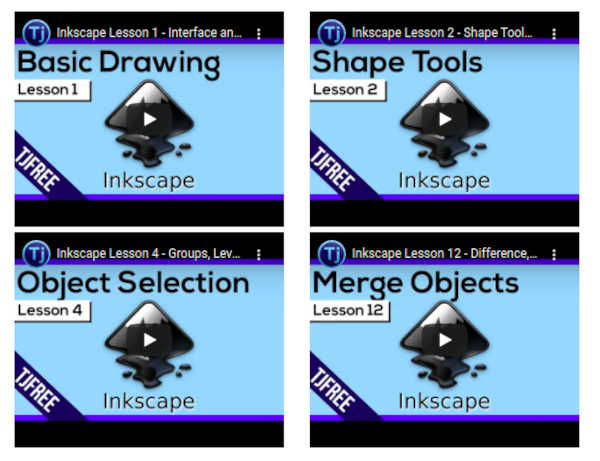

This page is based on the first weeks’ of the FabAcademy. You can visit my Fab Academy page [here] (https://fabacademy.org/2021/labs/vancouver/students/paul-cairns/assignments/2-project-management/). The tasks for this assignment included:
- Build a personal site describing you and your final project.
- Upload it to the class archive.
- Work through a git tutorial.
We will be evaluated on whether we:
- Made a website and described how we did it
- Introduced ourself
- Documented the steps for uploading files to archive
- Pushed to the class archive
The project management aspect of the assignment revolved around 3 key aspects and skills:
a. Version control using git b. Management of our website using GitLab c. Web development using MkDocs
In this section, each of these aspects will be discussed, and details about what was learned will be shared below.
a. Version control using git
Git is a powerful version control document that is used industry-wide by programmers and developers. The video below created by “The Net Ninja” (link to video here) introduces the concept of Git very well.
Now that we have had an overview of Git, let’s dive into how to install and use it. The following sections will serve as a useful guide in getting to know and use Git.
Making your terminal more navigable (OPTIONAL)
If you plan to be using the termanal often, your life will be a lot easier if you make it as aesthetic as possible for ease of use and navigation. if you plan to use macOS or Linux I recommend you install oh-my-zsh with the power10k them and Nerd Fonts. If you plan to use Windows I recommend that you add poshgit to your windows PowerShell terminal. Below is a video on how to install Oh-my-zsh as well as some links to help make your life easier.
LINKS FOR MACOS OR LINUX - install Oh-my-zsh and plugins - install Power10k and Nerd Fonts
LINKS FOR WINDOWS - install Poshgit in Windows Powershell
Installing and learning Git
I created the video below to demonstrate how to succesfully install Git and where to find tutorials and great information.
Once installed, I found a very useful 1 hour tutorial that explains the basics of git and provides an in depth understanding of how it works. The tutorial was created by the Youtube channel “Programming with Mosh” and can be found here. The video is included below.
For even more in depth lessons on how to use Git. I Highly recommend you visit the playlist of the Fab Academy’s own Kris at Aalto FabLab. You can watch the entire playlist here
Getting Comfortable with Git
While following the tutorials, I spent some time practicing Git by creating my own local repository on my computer and trying different commands. The video that I made below demonstrates some of the skills that I learned.
Linking Git with GitLab using ssh keys
The last piece of the puzzle was to link my computer to GitLab using ssh keys. This allows for my computer to pull and push documents to and from GitLab as I work on them from my machine. The key to this is generating an ssh key, and copying the ssh key into your GitLab repository. The video below outlines where it is possible to find the information.
b. Management of website using GitLab
Before diving into GitLab, it was important to understand Git so that I could understand the underlying architecture of GitLab. After I had gained a fundemental understanding of Git, which is the backbone of GitLab, the next step was to learn how to navigate and use GitLab as a tool to create my personal page. The following videos describe what I learned and how to use GitLab directly to make your website.
Building your website using GitLab
In this video, I describe how to use GitLab directly to build out your website. In theory, one could build out their entire website using this methodology, but it is limit in what you can do.
Compressing images to a suitable size for upload
One of the limitations presented to us was that each week can only take 10 MB of space on the GitLab repository. This presents challenges when looking to add visual aspects to your site in the form of videos and photos. To meet this requirement, it is important that you compress your images to web format. The video below describes how I used GIMP and BIMP to mass compress images.
You can also batch convert images in linux using image magic. To do this open the terminal and navigate to the folder in which all of your photos are and type the following code:
convert -resize 1280x "*.jpg" -quality 50 %03d.jpg
this will resize all of your jpeg files to 1280 pixels wide and maintain its aspect ratio as well as reduce the qualityty to 50%. This will output the new jpg files with the following names:
| resized001.jpg| | resized002.jpg| | resized003.jpg| | … | | … |
lastly, you can also batch convert png files by replacing the “.jpg” with “.png”
Compressing videos to a suitable size for upload
Another important trick is being able to embed MP4 videos into your webpage. In order to minimize the size of the files on the server so that your webpage loads fastest you will likely want to compress and scale your videos. To do this you will want to convert all your videos to mp4 format using ffmpeg.
Scale and convert your video format to mp4 by navigating the folder it is in and using the following code in your terminal:
ffmpeg -i input.ext -vf scale=1280x720 output.mp4
This will scale your video to 1280x720 and convert it to mp4. You can further scale down your video by trimming any unwanted portions using the following command:
ffmpeg -i input.mp4 -ss XX -t YY output.mp4
where -ss XX is the starting seconds where you want the video to start (i.e. you will be removing anything before) and -t YY is the length of seconds you want the video to be
Lastly if your video needs further compression, you can compress it even further using the following code
ffmpeg -i input.mp4 -vcodec libx264 -crf 28 -an output.mp4
where the “-an” flag will remove the audio, so use this for videos that will be muted. The -crf flag value results in a higher compression rate so the higher the value the more compression and the lower the quality. So you may want to explore higher crf values such as 32 or more. You can find the ffmpeg syntax at their website at this link here
You can also watch the video below for a tutorial on compressing images and videos. For videds skip ahead to the 37:00 minute mark.
Embedding YouTube Videos
Another important tool for maintaining a low website size in the repository is embedding your videos using Youtube, which is the method I chose for sharing videos. The video below illustrates how to embed a video in HTML or MarkDown.
c. Web development using MkDocs
The last thing I will discuss for the Project Management Assignment is how to install and use MkDocs or HTML to build your webpages. This will be done through two videos. The first explaining how to code using HTML and MkDocs, and the second how to preview it through your command line and push that to GitLab using Git.
Overview of HTML and MkDocs
In this video I describe how to code your static website using straight HTML, as well as how to install MkDocs, a brief discussion on coding using Markdown, and lastly how to change the them of your website in your .yml file.
Previewing and Uploading your webpages
Lastly, I will demonstrate how to preview your website using mkdocs through your command line and then push your files onto the server to GitLab.
d. Web development using HTML, CSS, and Bootstrap
After using MkDocs for the first few weeks, I decided I wanted to push myself and branch out into more powerful tools such as HTML and Bootstrap. The first step in my branching out was to add Bootstrap code online to my existing MarkDown (MD) files. This allowed me to add some columns and better organise my videos and photos. I used the following video as a reference which give a brief introduction on how to use bootstrap and link it into your HTML or MD code:
This little add on yielded the following results as an example:

The next spiral in my website development, which I applied during Week04 - Computer controlled cutting, was to learn HUGO to code an HTML based Static Website. To learn HUGO, I began with the following video produces by Kris at Aalto FabLab: